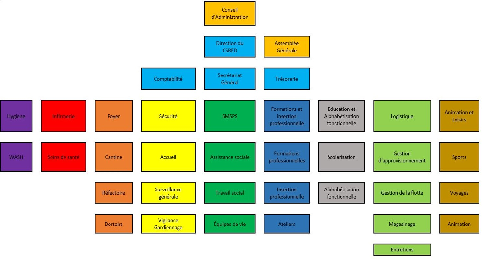

Notre histoire
Un parcours de dévouement et d'engagement pour les enfants vulnérables
Fondation
Le Centre de Stabilisation et de Resocialisation de l'Enfance en Difficulté (CSRED) a été créé en 2017 par un groupe de travailleurs sociaux, d'éducateurs et de bénévoles sensibles à la situation des enfants vulnérables de la région de Maroua.
Contexte
Face à la crise sécuritaire dans l'Extrême-Nord du Cameroun, de nombreux enfants se sont retrouvés séparés de leurs familles, déscolarisés ou traumatisés. Le CSRED est né de la nécessité urgente d'apporter une réponse adaptée à ces enfants en détresse.
Évolution
Depuis sa création, le CSRED n'a cessé de développer ses programmes et d'étendre son impact. Nous sommes passés d'une petite structure accueillant 15 enfants à un centre reconnu accompagnant plus de 150 enfants par an.
Mission et valeurs
Notre mission
Offrir protection, stabilisation et accompagnement vers la réinsertion sociale aux enfants en situation de vulnérabilité, dans le respect de leurs droits et de leur dignité.
Humanité
Chaque enfant est unique et mérite respect, dignité et amour. Nous plaçons l'humain au cœur de toutes nos actions.
Inclusion
Nous œuvrons pour l'inclusion de tous les enfants dans la société, sans discrimination liée à leur origine, religion ou situation.
Intégrité
Transparence, honnêteté et éthique guident notre travail quotidien et nos relations avec tous nos partenaires.
Innovation
Nous adaptons continuellement nos méthodes et développons des approches créatives pour mieux répondre aux besoins des enfants.
Collaboration
Le travail en équipe et les partenariats sont essentiels pour maximiser notre impact et la qualité de nos interventions.
Durabilité
Nous visons des solutions durables qui permettent aux enfants de construire un avenir solide et autonome.
Notre organigramme
Des professionnels dévoués unis par une mission commune

Nos bénévoles
Le CSRED fonctionne grâce à l'engagement de plus de 25 bénévoles passionnés : enseignants, animateurs, cuisiniers, gardiens, et bien d'autres profils qui donnent de leur temps pour accompagner nos enfants.
Rejoindre nos bénévolesNos réalisations
2017-2019 : Phase de démarrage
Création du centre, premiers partenariats avec les autorités locales, accueil des 50 premiers enfants et mise en place des programmes de base.
2020-2022 : Expansion des services
Développement des ateliers de formation professionnelle, renforcement de l'équipe médicale et lancement du programme de réinsertion familiale.
2023-2025 : Consolidation et innovation
Amélioration de la qualité des services, développement de programmes innovants et renforcement des partenariats internationaux.
Reconnaissance et partenaires
Reconnaissance officielle
- Agrément du Ministère des Affaires Sociales
- Partenariat avec l'UNICEF Cameroun
- Collaboration avec Plan International
- Soutien de la Coopération Française
Partenaires techniques
- Hôpital Régional de Maroua
- Délégation Régionale de l'Éducation
- Centre de Formation Professionnelle
- ONG locales partenaires
Rejoignez notre mission
Ensemble, nous pouvons offrir un avenir meilleur à chaque enfant en difficulté. Votre soutien peut changer une vie.